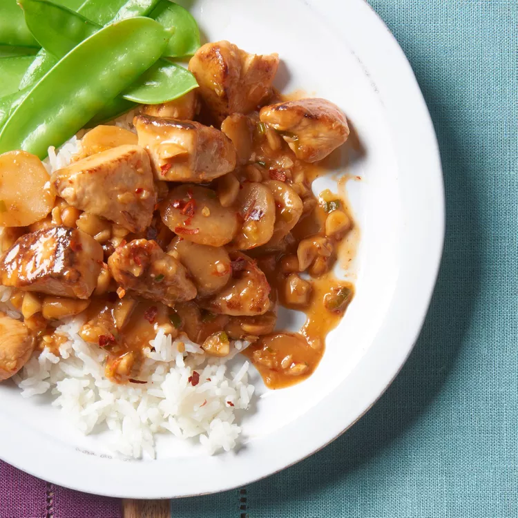

back home
Kung Pao Chicken

Description
Kung Pao chicken (a.k.a. Gong Bao or Kung Po) is a stir-fried Chinese dish that consists of cubed chicken in a sweet, spicy, and savory sauce. It originated in southwestern China in the early 1800s.
ingredient
- 2 tablespoons cornstarch, dissolved in 2 tablespoons water
- 2 tablespoons white wine, divided
- 2 tablespoons soy sauce, divided
- 2 tablespoons sesame oil, divided
- 1 pound skinless, boneless chicken breast halves - cut into chunks
- 1 ounce hot chili paste
- 2 teaspoons brown sugar
- 1 teaspoon distilled white vinegar
- 1 (8 ounce) can water chestnuts
- 4 ounces chopped peanuts
- 4 green onions, chopped
- 1 tablespoon chopped garlic
steps
- 1 tablespoon wine, 1 tablespoon soy sauce, 1 tablespoon sesame oil, and 1 tablespoon cornstarch/water mixture in a large glass bowl. Add chicken pieces and toss to coat. Cover the dish and refrigerate for about 30 minutes.Combine 1 tablespoon wine, 1 tablespoon soy sauce, 1 tablespoon sesame oil, and 1 tablespoon cornstarch/water mixture in a large glass bowl. Add chicken pieces and toss to coat. Cover the dish and refrigerate for about 30 minutes.
- Combine remaining 1 tablespoon wine, 1 tablespoon soy sauce, 1 tablespoon sesame oil, and remaining cornstarch/water mixture in a medium bowl. Whisk in chili paste, brown sugar, and vinegar. Add water chestnuts, peanuts, green onions, and garlic and toss
- Transfer water chestnut mixture to a medium skillet. Heat slowly over medium heat until aromatic.
- Meanwhile, transfer chicken from marinade into a large skillet; cook over medium-high heat, stirring, until chicken is cooked through and juices run clear.
- Combine water chestnut mixture and sautéed chicken together in one skillet. Adjust heat and simmer together until sauce thickens.
- Combine remaining 1 tablespoon wine, 1 tablespoon soy sauce, 1 tablespoon sesame oil, and remaining cornstarch/water mixture in a medium bowl. Whisk in chili paste, brown sugar, and vinegar. Add water chestnuts, peanuts, green onions, and garlic and toss to coat.
- Transfer water chestnut mixture to a medium skillet. Heat slowly over medium heat until aromatic.
- Meanwhile, transfer chicken from marinade into a large skillet; cook over medium-high heat, stirring, until chicken is cooked through and juices run clear.
- Combine water chestnut mixture and sautéed chicken together in one skillet. Adjust heat and simmer together until sauce thickens.